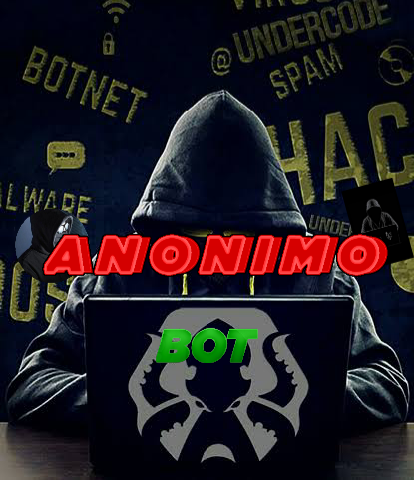

<!DOCTYPE html>
<html lang="pt">
<head>
    <meta charset="UTF-8">
    <title>bot</title>
    <style>
      .title{
        text-align: side;
        font-size: 160%;
        color: red;
        font-family: Courier;
        }
        .sla{
          font-size: 160%;
          font-family: Courier;
          color: red;
        }
        .card{
          .text-align: side;
          font-size: 130%;
          color: black;
          font-family: Times New Roman;
          background-color: Grey;
          box-shadow: 10px 5px 5px black;
          border-radius: 30px;
          border: 1px solid Grey;
          
        }
        .Mari{
          font-family: Courier;
          font-size: 100%;
          color: blue;
          
        }
      
    </style>
</head>
<body>
  <body bgcolor="darkgrey" ></body>
</body>
</html>
<div class="title">
  <h1><i>Chat Bot Anônimo </i>👨🏻‍💻</h1>
  

</div>
<div class="sla">
  <h1><i>Como Começamos🤔?</i></h1>
</div>
<div class="card">
  <p>Eu Queria fazer um bot e um amigo meu também, nós dois somos programadores, então pensamos:"por que não não fazermos um bot juntos", e foi assim que começou.Eu e ele como somos programadores e não queríamos pegar uma base pronta começarmos a fazer com nossa própria base, fazendo aos poucos.<p>
</div>
<div class="title">
  <h1><i>Donos Do Bot:</i></h1>
</div>
<div class="card">
  <p><i>GUILHERME:</i>Guilherme e um dos donos do bot ele e programador , ele já teve outros bots mais não com sua base, ele tem um apk com várias funções, muito determinado, e sempre disposto para programar.</p>
  <p><i>GABRIEL:</i>Gabriel e um dos donos do bot , ele e programador web geralmente gosta de programa sites e sistemas webs , dedicado com aquilo que procura, sempre acha tempo no dia dia para programar, ele tem 2 sites ativos mais um deles e do apk do Guilherme, inclusive ele quem programou esse site.</p>
</div>
<div class="title">
<h1><i>Sobre o bot:</i></h1>  
</div>
<div class="card">
<p><i>Nosso bot ainda está em fase de andamento, digamos que esta em beta , ele ainda não tem muitas coisas , mais já esta bem legal, ele é um bot que você vai poder aprender coisas novas com ele pois ele tem um menu hacker onde você vai poder aprender coisa novas, daqui para frente pretendemos colocar crash, consulta de dados e outras coidas legais, maís por enquanto não está tão completo, nele você vai encontrar vários jogos e apps que vão de um simples jogo modificados até os melhores imunes da atualidade.</i></p>  
</div>
<div class="title">
  <h1><i>Projetos Dos donos 📝📁:</i></h1>
  </div>
 <div class="Mari">
  <h1>Aperte nós botões abaixo para ser redirecionado para o projetos dos donos do bot.</h1>
<div class="title">
  <h1><i>GUILHERME:</i></h1>
</div>
<a href="https://glthh.github.io/evolution-/"><button style="text-align: side; font-size: 200%;color: black;font-family: Times New Roman; background-color: Grey;box-shadow: 10px 5px 5px black;border-radius: 30px;border: 1px solid Grey;">Mod evolution</button></a>
<div class="title">
  <h1><i>GABRIEL:</i></h1>
</div>
<a href="https://glthh.github.io/travadores/"><button style="text-align: side; font-size: 200%;color: black;font-family: Times New Roman; background-color: Grey;box-shadow: 10px 5px 5px black;border-radius: 30px;border: 1px solid Grey;">Travadores</button></a>
<div class="title">
  <div class="title">
    <h1><i>Bot:</i></h1>
  </div>
  <a href="http://Wa.me/553191786686"><button style="text-align: side; font-size: 150%;color: black;font-family: Times New Roman; background-color: Grey;box-shadow: 10px 5px 5px black;border-radius: 30px;border: 1px solid Grey;">Número do bot</button></a><br><br>
<input type="button" value="Termos de uso " onclick="funcao1()" style="text-align: side; font-size: 150%;color: black;font-family: Times New Roman; background-color: Grey;box-shadow: 10px 5px 5px black;border-radius: 30px;border: 1px solid Grey;">
<script>
  function funcao1()
{
alert("Nosso bot foi feito para o bem , se você usar ele pro mau a responsabilidade e toda sua , não e do Guilherme e nem do Gabriel, nos proporcionamos ferramentas Para o bem e auto conhecimento, se você usar para o mau vai tomar Block e como já disse a responsabilidade e sua 👍 ");
}
</script>


